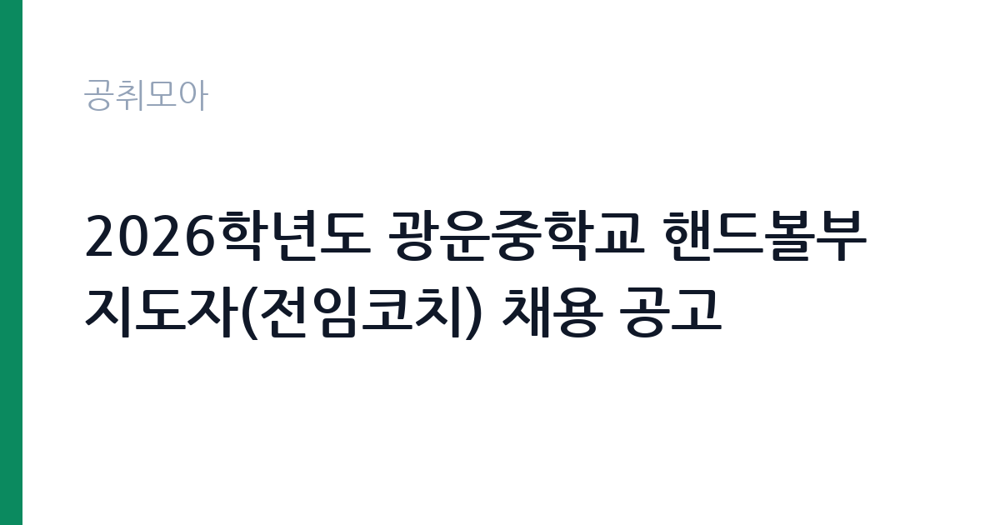

[교육청] 2026학년도 광운중학교 핸드볼부 지도자(전임코치) 채용 공고
서울특별시교육청 서울특별시북부교육지원청 광운중학교 · 서울 · 마감 2026-10-23 (D-12) · 출처 나라일터

한눈에 보는 모집 조건
| 기관 | 서울특별시교육청 서울특별시북부교육지원청 광운중학교 |
|---|---|
| 공고명 | 2026학년도 광운중학교 핸드볼부 지도자(전임코치) 채용 공고 |
| 고용형태 | 정규직 |
| 근무지 | 서울 |
| 게시일 | 2026-10-12 |
| 마감일 | 2026-10-23 (D-12) |
지원자격, 이렇게 읽으세요
- 핸드볼부 지도자(전임코치) 1명
- 접수 ~2026-10-23 마감
- 세부 조건은 원문 공고문 확인
자격요건은 대한민국 국적자로서 국민체육진흥법 시행령에 따른 체육지도자 자격증 소지자, 또는 중등학교와 대학, 실업팀 선수 경력자 중 하나 이상에 해당하면 됩니다. 해외여행에 결격사유가 없어야 하며, 핸드볼 종목 경력이나 단체구기 지도 경험이 있으면 서류 심사에서 강점이 됩니다. 이메일 접수 kwms1934@sen.go.kr와 광운중학교 행정실 직접 접수가 모두 가능하며, 평일 오전 9시부터 오후 4시까지 접수하고 마감일은 오전 10시까지입니다.
이 공고의 포인트
이 공고는 전임코치 자리라는 점이 핵심입니다. 같은 학교의 필드코치 공고와 달리 팀 운영 전반을 책임지는 상근 지도자로, 학교운동부 코치로서의 온전한 경력을 만들 수 있습니다. 접수 기간이 10월 12일부터 23일까지로 열흘 이상이라 서류를 차분히 준비할 수 있고, 직접 접수 창구도 열려 있어 서류 누락 걱정을 줄일 수 있습니다. 핸드볼은 국내 중학교 운동부에서 꾸준히 운영되는 종목이라 이후 다른 학교 지원으로도 이어지기 좋습니다.
전형은 어떻게 진행되나
이메일 접수와 행정실 직접 접수 중 편한 방식을 선택해 서류를 제출하면, 서류심사와 면접심사를 거쳐 최종 합격자를 선발합니다. 접수 기간은 2026년 10월 12일부터 10월 23일 오전 10시까지이며, 접수 기간 외 제출 서류는 인정되지 않습니다. 심사 단계와 합격자 발표 일정은 첨부된 채용 공고문에서 확인하십시오.
원문에서 확인한 전형 방식
○ 모집분야 : 핸드볼부 지도자 1명 ○ 선발직급 : 전임코치 ○ 자격요건 : 대한민국 국적자로서 「국민체육진흥법 시행령」에 따른 체육지도자 자격증 소지자 또는 중등학교·대학·실업팀 선수 경력자 중 1개 이상 해당자(해외여행에 결격사유가 없는 자) ○ 계약기간 : 2026. 11. 2. ~ 2027. 1. 9. ○ 접수기간 : 2026. 10. 12.(월) ~ 2026. 10. 23.(금) 10:00까지 ※ 접수기간 외 제출된 서류는 접수로 인정하지 않음. ○ 응시방법 : 이메일 접수(kwms1934@sen.go.kr) 또는 광운중학교 행정실 직접 접수(평일 09:00~16:00, 접수 마감일은 10:00까지) ○ 문의처 : 02-942-2372 - 자세한 내용은 반드시 첨부된 채용 공고문을 확인하시기 바랍니다.
이런 분께 추천해요
- 핸드볼 선수 경력이나 단체구기 종목 지도 경험이 있는 분입니다. 전임코치로서 팀을 직접 이끌어본 경험이 커리어의 자산이 됩니다.
- 체육지도자 자격증을 보유하고 학교운동부 상근 코치로 일하고 싶은 분입니다. 훈련과 대회, 학생 관리까지 팀 운영 전체를 경험할 수 있습니다.
- 서울 북부권에서 근무가 가능하고 동계 시즌 집중 지도에 전념할 수 있는 분입니다.
지원 전 체크리스트
- 보유 자격증이나 선수 경력이 공고문의 자격요건 중 하나에 해당하는지 확인하셨습니까.
- 선수 경력증명서와 자격증 사본, 신분증 등 제출서류 목록을 원문에서 대조하셨습니까.
- 직접 접수 시 평일 접수시간과 마감일 오전 10시 마감을 확인하셨습니까.
- 계약기간과 전임코치의 근무시간, 보수 조건을 이해하고 지원하셨습니까.
모집 일정과 제출 타이밍
접수 기간은 2026년 10월 12일부터 10월 23일 오전 10시까지입니다. 열흘 이상의 여유가 있으나 경력증명서 발급에 시간이 걸릴 수 있으니 초반에 신청하시기를 권합니다. 직접 접수를 계획한다면 평일 행정실 운영시간을 확인하고, 마감일에는 오전 10시까지 도착해야 함을 기억하십시오.
직무 이해하기: 교육청
학교운동부 전임코치는 팀 훈련 계획 수립과 기술 지도, 체력 관리, 대회 출전 인솔과 학생선수 생활 지도를 총괄합니다. 핸드볼부는 동계 시즌 대회 출전이 집중되므로 훈련량 조절과 부상 관리가 중요하고, 학생선수의 수업 결손과 학습권 보장에도 신경 써야 합니다. 학부모 상담과 학교 행정 협조까지 맡는 팀의 중심 역할입니다.
자기소개서 작성 팁
자기소개서는 선수 경력과 지도 경험을 구체적으로 쓰십시오. 어떤 연령대와 수준의 팀을 지도했고 어떤 성과를 냈는지 수치와 함께 서술하시고, 광운중 핸드볼부를 맡는다면 동계 시즌을 어떻게 운영할지 계획을 한 문단으로 제시하십시오. 학생선수 인성 지도에 대한 본인의 철학도 함께 담으시면 좋습니다.
면접 준비 포인트
면접에서는 종목 전문성과 팀 운영 계획, 학생선수 생활 지도 방안을 묻습니다. 훈련 프로그램 구성과 부상 예방, 학부모 소통 방식에 대한 질문을 미리 준비하시고, 실제 지도 현장의 사례를 들어 답변하시면 설득력이 높아집니다.
급여·근무조건 읽는 법
학교운동부 전임코치의 보수는 교육청의 코치 인건비 기준에 따라 지급되며, 필드코치보다 높은 단가가 적용되는 것이 일반적입니다. 정확한 월 보수와 수당, 4대보험과 퇴직금 조건은 해당 공고문의 근로조건에서 확인하셔야 합니다. 계약기간이 2개월 남짓이므로 급여 지급 방식과 계약 종료 조건도 원문에서 대조하십시오.
자주 묻는 질문
- 같은 학교 필드코치 공고와 중복 지원이 가능합니까?
별개의 채용 건이므로 각각 지원이 가능한 것이 일반적입니다. 다만 계약기간과 근무형태가 다르니 본인의 상황과 경력 목표에 맞는 자리를 선택하시기를 권합니다. - 전임코치의 하루 일과는 어떻습니까?
수업 전후 훈련 지도와 주말 대회 인솔, 훈련 계획 수립과 행정 업무가 병행됩니다. 방학 중에는 전지훈련이 잡히기도 하므로 연간 일정을 원문과 면접에서 확인하십시오. - 다음 학기 연장이 가능합니까?
학교운동부 지도자 계약은 예산과 운영 계획에 따라 연장 여부가 결정됩니다. 좋은 근무 평가와 팀 성과가 연장의 기반이 되므로 매 시즌 최선을 다하시기를 권합니다.
함께 보면 좋은 공고
[교육청] 2026학년도 광운중학교 아이스하키부 지도자(필드코치) 채용 공고 — 마감 2026-10-15[교육청] 인천특수교육지원센터 기간제 교육공무직(치료사-작업치료사) 채용 공고(3차) — 마감 2026-10-16[교육청] 2026년 제11회 경기도교육청 임기제공무원 채용시험 공고[홍보기획(5급), 언론(7급), 교육공무직원 소통·관리(5급)] — 마감 2026-10-19출처: 나라일터 공개정보를 바탕으로 공취모아가 정리한 안내글입니다. 모집 조건·일정은 변경될 수 있으니 지원 전 반드시 원문 공고문을 확인하세요. 본 글은 정보 제공용이며 합격을 보장하지 않습니다.